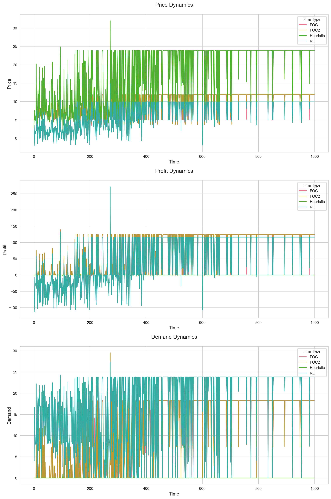
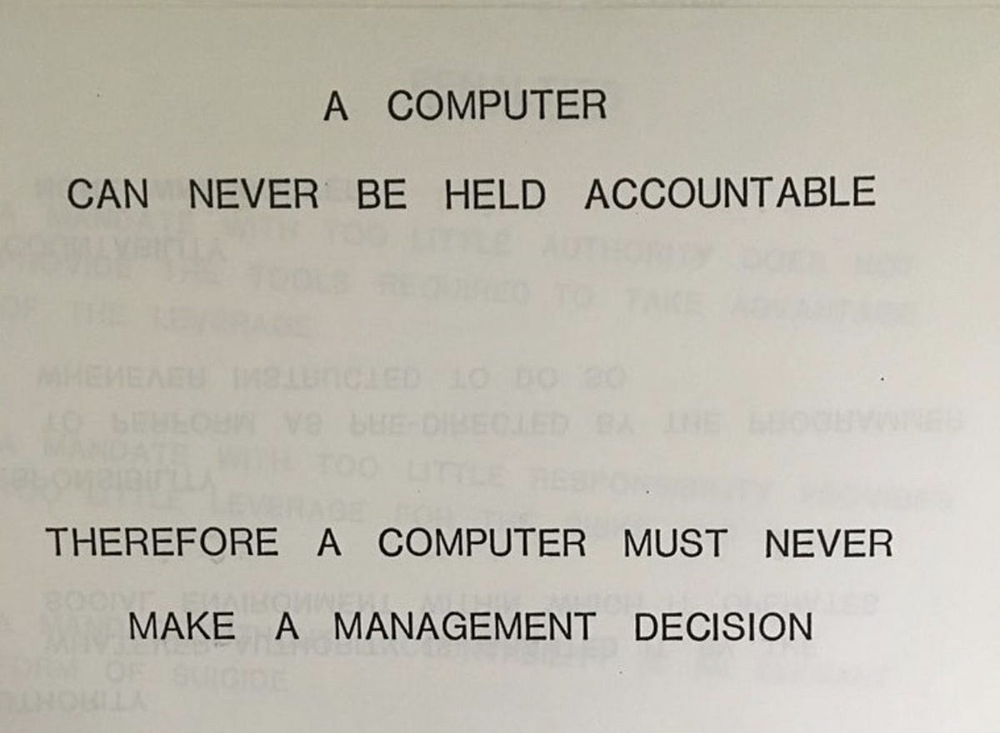

Recent advancements in artificial intelligence, particularly reinforcement learning (RL), have been touted as potentially transformative for pricing strategies in oligopolistic markets. I don’t really buy it, but wasn’t super familiar with what the process here looked like in practice. In order to Get Familiar, I put together a simple model where firms compete on price, but with different pricing strategies. We’ll get to that later: first, some background.
Economic Foundations of Pricing Strategy
Theoretical Underpinnings
The economic theory of pricing in oligopolistic markets has a rich history, dating back to the seminal works of (cournot1838?) and (bertrand1883?). These models laid the groundwork for understanding strategic interactions in imperfectly competitive markets. Subsequent developments, including the theory of contestable markets (Baumol, Panzar, and Willig 1982), have further refined our understanding of pricing dynamics and market entry.
Most firms probably don’t set prices based on first order conditions. Acquiring all relevant data is costly, and it’s not totally possible to have perfect information about consumer responses to price changes in most environments (I can’t think of any where it would be possible). That said, optimal firm behavior in an ideal environment provides a nice benchmark for evaluating alternative price-setting approaches.
Antitrust Considerations
Antitrust policy has long been informed by economic theory. The structure-conduct-performance paradigm, proposed by Mason (1939) and developed by Bain (1968), has been influential in shaping antitrust thinking. Similarly, the Chicago School critique, articulated by scholars like Posner (1979), emphasizes the importance of efficiency considerations in antitrust analysis.
In practice, antitrust authorities have developed various tools to assess potentially anticompetitive pricing behaviors, including:
Predatory Pricing Tests: The Areeda-Turner test (Areeda and Turner 1975) provides a cost-based framework for identifying predatory pricing.
Upward Pricing Pressure: In merger analysis, measures of upward pricing pressure help quantify incentives for post-merger price increases (Farrell and Shapiro 2010).
These tools are imperfect, much like the models they’re based on. HHI, for example, is particularly sensitive to industry definitions. Spatial competition and diversity of product offerings can skew the results HHI yields in a way that isn’t immediately obvious.
Spectrum of Pricing Approaches
First-Order Condition (FOC) Based Approaches
The traditional economic approach assumes firms set prices to maximize profits, usually defined something like:
If we assume firm \(i\)’s quantity demanded (\(Q_{D_i}(p_i)\)) is linear in price \(p_i\), and marginal costs \(c_i\) are fixed, we’ll have a profit function that looks something like:
We’re going to add a minor complicating factor here and assume that firms compete on prices, taking other firms’ behavior as given, as well as time-to-delivery, which is exogenously determined. In the long run I’d like to tweak this model so that time-to-delivery can be minimized via bilateral contracting with a third party company (this can be thought of as selling goods on Amazon), but for now we’re keeping it simple. This whole exercise was inspired by Amazon dropshippers, for what it’s worth.
I’m mostly curious about how these firms will behave when competitors behave suboptimally. To that end, we’ll introduce two other firm types: one that follows a heuristic, and another that sets prices dynamically using reinforcement learning. All code for this exercise can be found here:.
Heuristic Approaches
In practice, many firms rely on simpler heuristic methods for price setting. These “rules of thumb” are often easier to implement and communicate within an organization. Common heuristics include:
Cost-Plus Pricing: \(p_i = c_i * (1 + \varphi_i)\), where \(\varphi_i\) is a markup. In practice the markup is often based set on a combination of margin targets and projected demand.
Competitor-Based Pricing: \(p_i = \mathbb{E}\[p_{-i}\] * (1 + \gamma_i)\) - basically the firm takes the expected market price and adjusts it up or down by some percentage \(\gamma\), again often based on some combination of a margin target and projected demand.
Heuristic approaches can be surprisingly effective in complex, dynamic environments (Gigerenzer and Gaissmaier 2011). They often require less detailed information about demand or competitive conditions compared to FOC-based methods. While they may not lead to theoretically optimal profits, they can be “good enough” given the costs and complexities of implementing more sophisticated approaches (Simon 1956).
Reinforcement Learning Approaches
Reinforcement learning (RL) has been proposed as a new approach to pricing strategy. In an RL framework, pricing decisions are made by an agent that learns from the outcomes of its actions over time. The key components of an RL system for pricing typically include:
State space: Market conditions, competitor prices, inventory levels, etc.
Action space: Possible prices the firm can set
Reward function: Typically the profit earned from each pricing decision
Proponents argue that RL approaches have the potential to capture complex, non-linear relationships in the market without requiring explicit model specification, and can adapt to changing market conditions through continuous learning. They’re probably wrong at this point in time, but RL-based approaches are interesting nonetheless.
Why are they ‘probably wrong’?
Adaptability: Firms using FOC or heuristic approaches can and do update their strategies based on market outcomes.
Complexity: While RL can handle complex state spaces, it’s not clear that this additional complexity leads to better outcomes in many real-world pricing scenarios.
Learning: Traditional approaches also “learn” from data, albeit in a more structured manner.
Competitor-Based Pricing: An RL agent might learn to price relative to competitors - and those competitors may in turn be RL agents!
Value-Based Pricing: Through interactions with the market, an RL agent could learn to estimate customers’ willingness to pay and price accordingly.
In this light, RL might be viewed not as a revolutionary new approach, but as a potentially more “efficient” way of implementing and combining existing pricing strategies. “Efficient” is in scare quotes because deviations from optimal behavior generate deadweight loss by definition, as well as the fact that deploying AI models at scale in the year 2024 generates non-negligible externalities.
Comparative Analysis and Simulation Setup
Let’s outline the model we’ll use in the simulation here.
Market Model: The general version of the model we’re looking at here has N firms employing one of three strategies:
FOC-based: Given known demand and a simple production function, firms maximize profits based on first order conditions
Heuristic: Firms use competitor-based pricing with periodic adjustments
RL-based: Firms use a Deep Q-Network to learn pricing strategies
where \(p_i\) is firm i’s price, \(d_i\) is its delivery time (exogenously determined), and \(\alpha, \beta, \xi, \rho\) are parameters.
Simulation Dynamics: The simulation will run for T periods, with firms making pricing decisions in each period based on their respective strategies. We’re going to keep it simple and have one firm of each type, but two FOC firms (really just as a sanity check to make sure everyone’s behavior is as expected - the two FOC firms should behave very similarly)
Outcome Measures: We will track prices, profits, and market concentration over time.
All of the code for the simulation below can be found in this repo.
from dynamic_pricing_sim import Market, FOCFirm, HeuristicFirm, RLFirm, run_simulation, plot_resultsimport numpy as npimport matplotlib.pyplot as plt# Set up the marketdemand_params = {'alpha': 100,'beta': 20,'gamma': 6,'xi': 0,'rho': 0}market = Market(4,demand_params)foc_firm = FOCFirm.FOCFirm(cost=5, market=market)heuristic_firm = HeuristicFirm.HeuristicFirm(cost=5, markup=0.1)foc_firm_2 = FOCFirm.FOCFirm(cost=5, market=market)rl_hyperparams = RLFirm.RLHyperParamsrl_hyperparams.epsilon =0.5rl_firm = RLFirm.RLFirm(state_size=9, action_size=40, cost=5)# Set up the firmsfirms = [ foc_firm, foc_firm_2, heuristic_firm, rl_firm]# Set delivery times (assumed constant for simplicity)delivery_times = np.array([1, 1, 1, 1])# Run the simulationT =1000prices_history, profits_history, demand_history = run_simulation(T, market, firms, delivery_times)# Plot the resultsfig = plot_results(prices_history, profits_history, demand_history,['FOC', 'FOC2', 'Heuristic', 'RL'])plt.show()
C:\Users\Cory\AppData\Local\Programs\Python\Python310\lib\site-packages\dynamic_pricing_sim\equilibrium.py:15: RuntimeWarning: The iteration is not making good progress, as measured by the
improvement from the last ten iterations.
equilibrium_prices = fsolve(equations, initial_guess)
Recent avg profit: -34.31, Last price: 9.29, Last profit: -25.88
Recent avg profit: -18.28, Last price: 9.88, Last profit: -106.36
Recent avg profit: 16.00, Last price: 5.84, Last profit: 116.33
Recent avg profit: 45.20, Last price: 9.88, Last profit: 116.33
Recent avg profit: 83.25, Last price: 9.88, Last profit: 3.43
Recent avg profit: 86.58, Last price: 9.88, Last profit: 116.33
Recent avg profit: 92.31, Last price: 9.88, Last profit: 116.33
Recent avg profit: 107.29, Last price: 9.88, Last profit: 116.33
Recent avg profit: 111.68, Last price: 9.88, Last profit: 116.33
Recent avg profit: 111.90, Last price: 9.88, Last profit: 116.33

Ok so the RL firm settles into a decent strategy over time that behaves reasonably well in the long-run. The FOC firms are mostly stable, as expected, and the heuristic firm is all over the place. That’s what you get for raising prices erratically for no reason! Bad profits!
Here are some of the summary stats we get from the above:
This simulation setup allows us to critically evaluate several key questions:
How do RL-based pricing strategies perform compared to traditional FOC-based and heuristic approaches in terms of firm profitability and market outcomes?
Obviously the firm that is literally optimizing/maximizing profit wins - the rules of the game here are skewed. That said, the RL firm significantly outperforms our (admittedly dumb) heuristic in this simple model
Do RL strategies converge to known optimal strategies in simple market settings? If so, do they offer any advantage over traditional methods?
It’s obvious that this simple RL agent does not learn the optimal pricing strategy. It’s also a bit of a pain in the neck to calibrate - it took me a decent amount of time to get to a point where the model would get consistently reasonable results - I ended up having to drop the delivery times from demand, at least for this run, to get the RL agent to deliver non-negative profits. A decent amount of reward shaping was also required.
In more complex settings, do RL strategies discover genuinely novel pricing strategies, or do they essentially learn to implement sophisticated versions of known heuristics?
This project took me a few hours of work to get up and running, and frankly at the end of it I’m not totally sure what strategy the agent settled on. My hunch is that it gets stuck in a local optimum - there were scenarios where it appeared to be maximizing quantity demanded as opposed to profit, but the relative simplicity of the model and limited training time makes me think that it was just converging to a local optimum.
How does the presence of RL-based pricing affect market dynamics and the behavior of firms using other pricing strategies?
The FOC firms aren’t really impacted by the RL firm - given non-zero price response by design, the FOC firm does exhibit some (very small) price volatility, but ultimately the consistency is well on display. Heuristic firms, however, become fairly erratic. I think this is probably a reasonable approximation of reality - firms with a well-established pricing strategy based on knowledge of their consumers and internal operation are going to know how to respond to competitors’ erratic behavior, whereas firms who are pricing based solely on perceptions of market conditions are going to struggle a bit more. In reality, the RL firm would likely train on historical firm data as well as publicly available price histories, so the ‘exploration’ periods would likely happen ‘in the lab’. That said, in practice dynamic pricing models are much more intricate than the one presented here, and in turn much more opaque - and less predictable in the face of shocks.
What are the computational and data requirements for implementing RL-based pricing, and how do these compare to the requirements for sophisticated implementations of traditional approaches?
So if you’re putting together a silly lil model on your personal laptop, this simulation runs start-to-finish in about 5 seconds. And compared to some of the other work I’ve done in the pricing space, it was a pain in the neck to set up and calibrate. As nice as it would be to get something like this set up right and let it try to solve my own \(\pi-max\) problems, I’m reminded of the adage that’s been circulating a lot with the rise of the LLM: 
Ultimately theese things need a ton of guardrails to avoid erratic behavior, and these guardrails ultimately serve to simulate the optimal behavior we’re trying to avoid modeling in the first place. There are a bunch of other non-theoretical reasons, like customer retention or avoidance of tacit collusive behavior, that we might not want to outsource this work too. So like, maybe we should just do the work. I can think of a dozen real-world use cases of RL in an operations management setting, but price setting doesn’t seem like a great candidate.
On the topic of tacit collusion, from an antitrust perspective it’s super important to understand whether RL algorithms fundamentally change the nature of market competition. Can RL algorithms learn to coordinate on high markups without explicit collusion? If so, is this fundamentally different from tacit collusion that can arise with traditional pricing methods? The former seems likely, especially if you have two agents functionally following the same strategy by being trained with the same data. There’s an interesting segment on quant work from Good News that talks a bit about how the algorithms quants use at finance firms
in particular
So if you’re … yapping about this wacky new trading strategy you found, they’re going to go implement it at their firm and you’re gonna lose all your edge
There are fundamentally two types of model variation here: features incorporated and model architecture. My gut says that in most of the ways that matter, these two should converge in the long run - if one model outperforms another, competitors will work to identify where the advantage is coming from and adopt it. It’s somewhere between efficient markets and no-free lunch: in the long-run, the models are the same. Once we’ve extracted all the juice from dynamic pricing we’re left where we started, good old cost minimization.
Firms considering implementing these strategies are likely not cost-constrained, but the cost of training and serving these models is non-negligible and should probably incorporated into the broader ROI calc when it comes to incorporating these as an alternative to more traditional price-setting strategies.
Most of what I’ve learned in this exercise was basically how to go about setting up a dynamic pricing agent, as most of my background in RL previously was thinking about how roombas should work or trying to figure out why a Q-learning agent I birthed sucks so bad at jumping over the green pipe that’s just a little too tall.
Was it otherwise valuable? My take is that there are basically three conditions you need to meet for this to be worth thinking about:
1. Your firm is already on a cloud services provider that makes deployment at scale easy
2. That cloud environment also has well-constructed feature store that'd make these model builds easier
3. You have a ton of time on your hands and have already worked through the stuff that you *know* is going to add value
If you can check all three boxes here, this is probably a great exercise - especially if you’re able to incorporate sentiment analysis into the pipeline. There are very few industries where attaining FOC outcomes are realistic, and it’s totally plausible that well-designed RL-based pricing could mark an improvement over existing workflows, particularly if your pricing/strategy teams are using bad heuristics (like taking a fixed markup percentage over competitor prices). These things are a bit opaque though, and in practice I will likely stick toward more interpretable models that incorporate what all parties can agree are the relevant structural features.
References
Areeda, Phillip, and Donald F Turner. 1975. “Predatory Pricing and Related Practices Under Section 2 of the Sherman Act.”Harvard Law Review, 697–733.
Bain, Joe Staten. 1968. Industrial Organization. John Wiley & Sons.
Baumol, William J, John C Panzar, and Robert D Willig. 1982. Contestable Markets and the Theory of Industry Structure. Harcourt Brace Jovanovich.
Farrell, Joseph, and Carl Shapiro. 2010. “Antitrust Evaluation of Horizontal Mergers: An Economic Alternative to Market Definition.”The BE Journal of Theoretical Economics 10 (1).
Gigerenzer, Gerd, and Wolfgang Gaissmaier. 2011. Heuristic Decision Making. Annual review of psychology.
Mason, Edward S. 1939. Price and Production Policies of Large-Scale Enterprise. The American economic review.
Posner, Richard A. 1979. “The Chicago School of Antitrust Analysis.”University of Pennsylvania Law Review 127 (4): 925–48.
Simon, Herbert A. 1956. Rational Choice and the Structure of the Environment. Psychological Review. Vol. 63. 2. American Psychological Association.
U.S. Department of Justice and Federal Trade Commission. 2010. “Horizontal Merger Guidelines.”Federal Trade Commission.